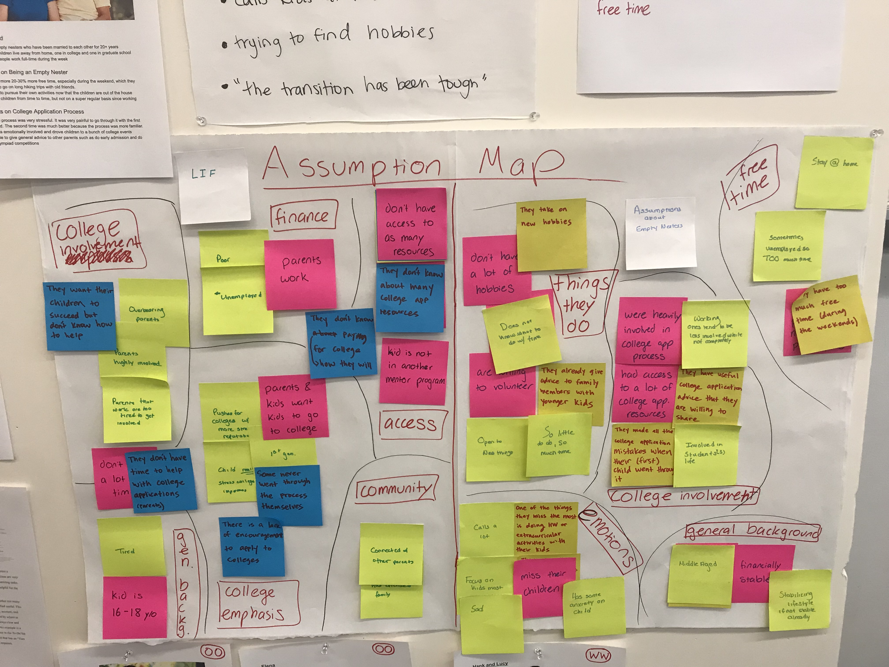
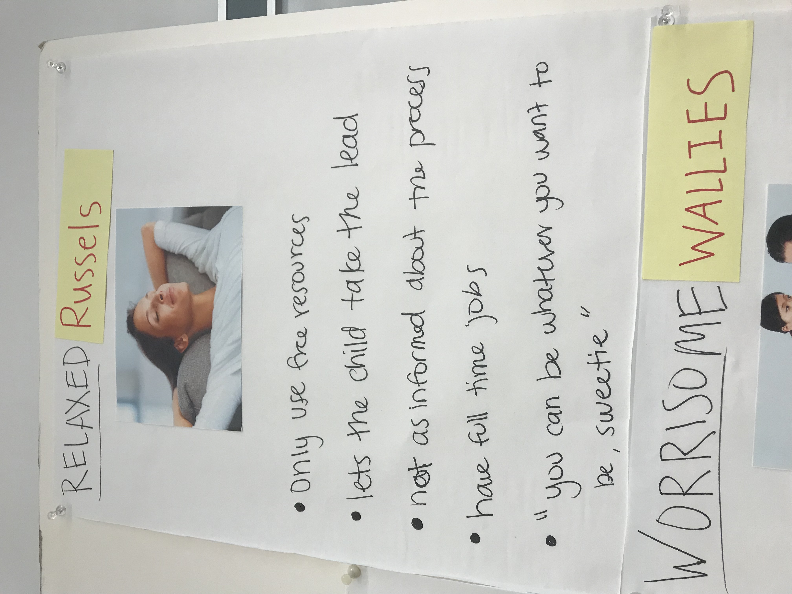
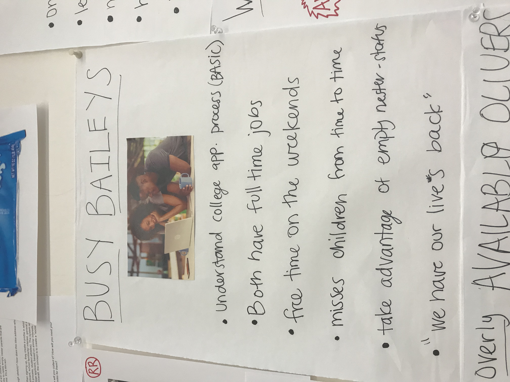
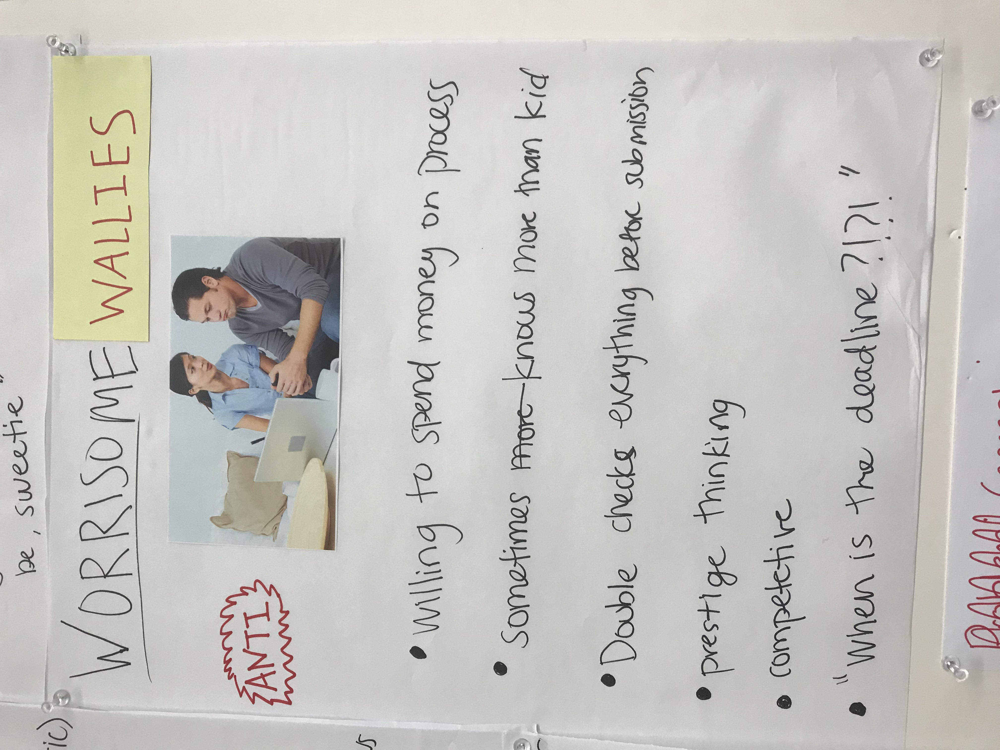
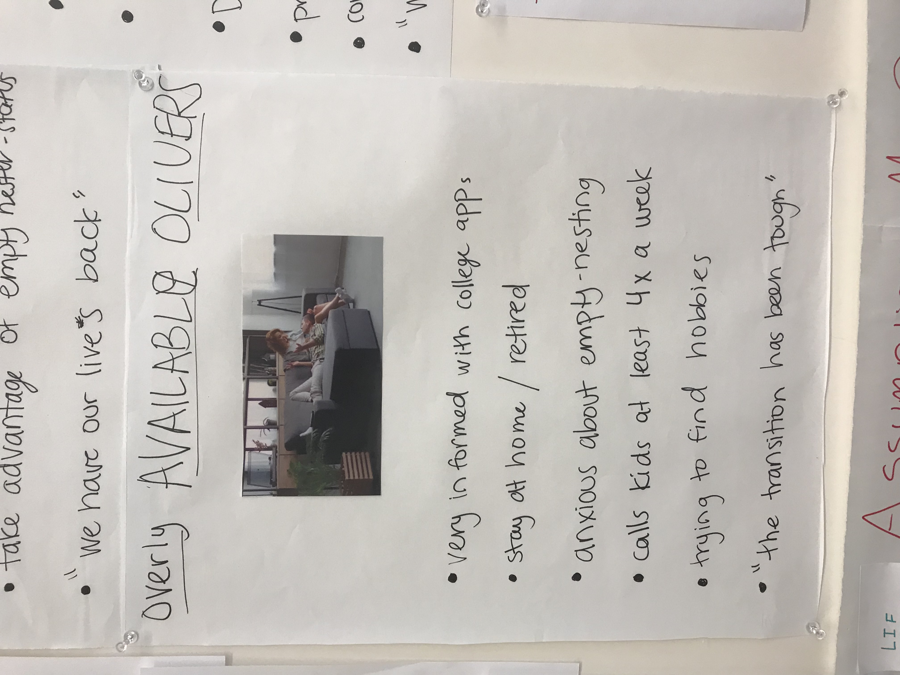

Needs Analysis Report
What we learned about our users and their needs
When first entering the world of college applications, it can
be very daunting- especially to parents experiencing this wild
ride for the first time. Tutors, concelours, financial aid,
SATs, ACTs, superscore, subjects tests - these are just a few
of the terms that you often hear when a student is applying to
college. And this crucial time can be even more challenging to
parents of low-income families that cannot afford fancy college
counselors or tutors or all the books on college.
Our project
strives to connect two user groups, parents with children who
left for college (i.e. empty nesters), and parents of highschool
juniors and seniors that are just beginning to learn about the
application process. We believe that empty nesters have the
potential to serve as an invaluable source/ guide to new
college-applicant parents who do not already have access to or
knowledge of college application resources. From what are the
best SAT prep books/tutors, to how to apply for financial aid,
to the benefits of ED versus EA- these parents have experienced
it and are usually excited to share the knowledge. A side benefit
is that this also provides a hobby to newly empty nester parents
that are adjusting to life without their children at home. It's
a win-win.
Our app/webpage interface will allow empty nester parents and
new college-applicant parents to create profiles that will be
used to connect users, empty nester to new college applicant,
based on similar interests, experiences, student education, and
needs. The goal is to create a “social network experience” to
connect both sides. By establishing these connections, we hope
to make the college application process less daunting for families
who never went through it before, while providing a new hobby to
empty nester parents who have more free time after their children
left.
We identified our users’ needs through 12 interviews of both parents
who are going through the college application process for the
first time and empty nester parents. We talked to 7 empty nesters
and 5 new college-applicant parents. Before conducting a majority
of our interviews, we mapped the assumptions we had about our users.

We used these assumptions to come up with interview questions.
For empty nester parents, we wanted to check (1) whether they
miss their children, (2) how much free time do they have without
their children around, (3) what are they doing with their free
time, (4) how much were they involved in the college application
process, and (5) whether they would describe themselves as
knowledgeable people about the college process. For new college
application parents, we decided to focus on lower-income families
because they are a subset of our user group that we think would
benefit from this project the most. We wanted to check (1) what
college application resources do they know of and use, (2) how
involved they are in their children’s schooling, (3) what do
they think about applying to college, (4) which colleges that
want their children to apply to, and (5) whether they rely on
others in their communities to help them out.
After our interviews, we created 10 people portraits and used
what we learned to construct 4 personas, which both represent
our user group and other groups (i.e. Worrisome Wallies) that
we don’t plan to design for:

Relaxed Russels
This persona falls under the category of parents with children currently applying to colleges. These parents are seen as having a more “relaxed” and step back approach to the process. They are very supportive but let the children take the lead and make all the decisions. Therefore, they are less informed about the process in general than their children. This does not mean they do not care, they just think the child knows what's best and are also occupied with full time positions. They also use only free resources for the process unless the child asks for more help. They make up the part of the new college-applicant parent group that we are trying to help.

Busy Baileys
This persona falls under the category of empty nesters. When their children were at home, both parents worked full time jobs and already had busy lives. But because their children have gone through the application process, they have a solid base understanding of what it looks like and what needs to be done from the parents end. Their children were very independent and continue to be so. Now as empty nesters, they embrace the new-found calmness around the house and try to plan on new social activities or things to do on the weekends. Although they do miss their children, they feel like they have their lives back.

Worrisome Wallies
This persona falls under the category of parents with children applying to colleges. These parents are very involved in the process - maybe even overly. They most certainly know more than the child and even have a copy of “Fiske’s guide to colleges” on their bedside table. They are very competitive with friends who also have kids applying and this most often has to do with their prestige thinking. They spend tons of money on the application process and outside resources. Because of the intensity of this persona, we decided they are the “anti-persona” in that we do not want them to use our product, in fear that they would drive the other customers away or discourage empty nester parents from volunteering their advice.

Overly Available Olivers
This persona falls under the category of empty nesters. Because they are and were stay at home/ retired during the application process, they were very involved in their children’s lives and the application process. Now that their kids are gone, they feel like they have too much free time and are having a tough time transitioning. They call their kids often and are trying to find new hobbies or get back in tune with old ones.
OCEAN Design Framework
In order to better understand and analyze our personas and their needs, we used an OCEAN framework that ranks their personality types. The categories are Openness, Conscientiousness, Extraversion, Agreeableness, and Neuroticism. We learned from this framework that all of our personas are around the same level of Extraversion, but range quite a bit in Neuroticism. In order to design a successful product, we need to be able to design for our persona’s and their personalities.